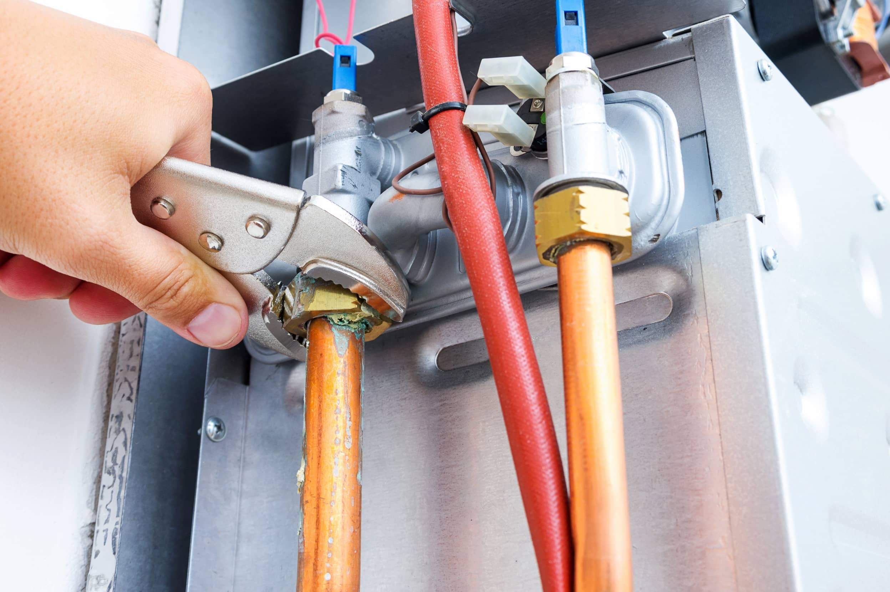
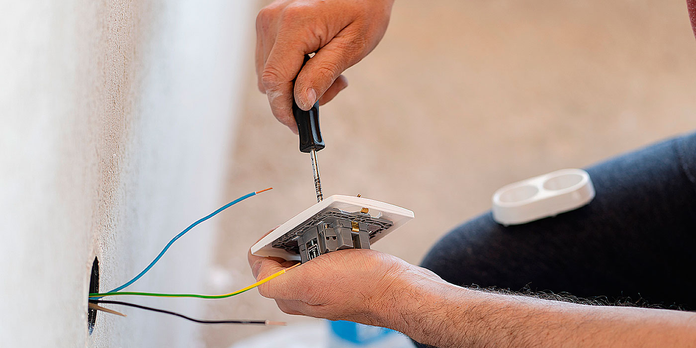
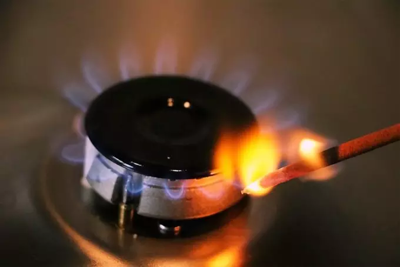
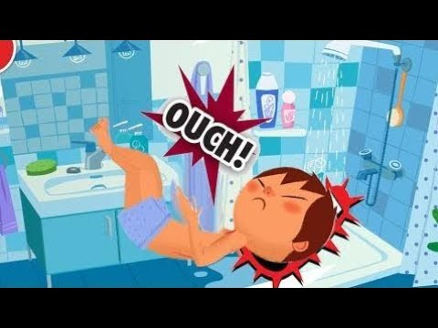
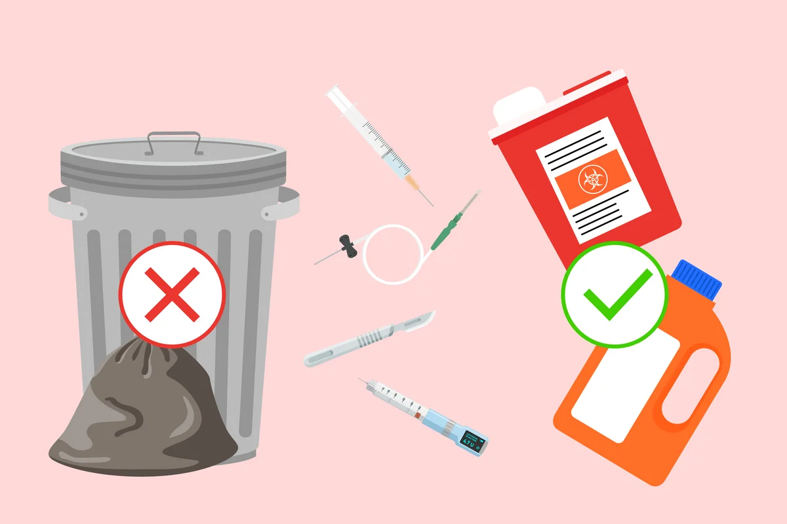

Consejos para el hogar
Desde el cuartel Bomberos Z te dejamos estas recomendaciones para evitar accidentes en el hogar o lugar de trabajo.
Como prevenirlos
A diario ocurren accidentes caseros que pudieron haberse evitado. Algunos son sólo percances, pero otros tienen consecuencias fatales. Ventanales sin protección, productos químicos tóxicos envasados en botellas de bebida, cuchillos a la vista o enchufes en mal estado son algunos de los potenciales peligros que acechan en la casa.
Lo lamentable, estos accidentes se podrían haber evitado si los adultos responsables (padres, tíos o abuelitos) hubieran sabido corregir los peligros, además de enseñar a los niños a ser capaces de reconocer por sí mismos muchos de estos riesgos.
En general reaccionamos después que ocurren los hechos y ya no hay nada que hacer. En ese momento arreglamos el enchufe, guardamos el cuchillo, pero deberíamos haber actuado antes para evitar esas consecuencias. La idea es aprender a identificar, evaluar, corregir y controlar el riesgo.
No existen los accidentes ocurridos por mala suerte, azar o destino, todos tienen una causa reconocible.
Recomendaciones
Por eso, se recomienda algunas medidas que apuntan a una cultura preventiva.
Instalaciones de gas
Deben ser realizadas por personal especializado e inspeccionadas en forma periódica. En caso de desperfecto hay que cortar el suministro e informar a la empresa proveedora. Si se deja la vivienda sola, es mejor cortar el suministro general. En la cocina, hay que mantener limpios los quemadores y no llenar demasiado los recipientes al hervir líquidos que pueden rebasarse y apagar la llama.
Electricidad
Hay que cerciorarse de que todas las instalaciones, cables y enchufes estén en buen estado. No manipularlos con las manos mojadas y verificar que no queden presionados por muebles, camas o sillones. Los enchufes no deben recargarse y no hay que dejar vasos que contengan líquidos sobre artefactos eléctricos. Al limpiarlos, tienen que ser desconectados previamente y utilizar paños secos. En el baño no hay que utilizar estufas, radios u otros aparatos eléctricos, como secadores de pelo. Para proteger a los pequeños, es mejor colocar tapones de seguridad en los enchufes.
Fuego
En la cocina nunca se deben dejar materiales combustibles cercanos a los quemadores encendidos, ni paños de cocina, delantales o cajas de fósforos. Las estufas deben estar lejos de cortinas o prendas de ropa que se pudieran inflamar.
Resbalones y caídas
Para evitarlos, todas las superficies de tránsito y lugares de acceso deben permanecer libres de obstáculos; iluminar el lugar donde se ingresa; no transitar en la oscuridad ni descalzo; mantener el piso limpio y seco; utilizar pasamanos en las escaleras e instalar superficies antideslizantes; pegar las alfombras levantadas y no permitir que los niños jueguen en ellas. En la ducha, se sugiere instalar una goma para evitar resbalones. Si se van a realizar trabajos de altura, hay que utilizar escaleras seguras y resistentes. En el caso de departamentos, jamás colocar las camas cerca de las ventanas y, si hay niños pequeños, hay que instalar mallas o rejas de protección.
Almacenamiento

Los medicamentos siempre deben guardarse lejos de los niños, en un mismo lugar. Sustancias peligrosas inflamables o insecticidas jamás deben ser trasvasijados a envases de vidrio ni ser almacenados cerca de la cocina o baño, sino en lugares bien ventilados y bajo llave, en sus envases originales, para evitar confusiones.
Objetos cortopunzantes
Si al manipular objetos de vidrio éstos se quiebran, hay que retirar con cuidado los trozos más grandes y envolverlos con cartones, utilizando guantes. Barrer bien el sector. Los cuchillos y tijeras deben guardarse en sitios seguros, lejos de los niños. Si los hay, se debe dejar lejos de su alcance botones, alfileres, monedas o cualquier otro objeto que se puedan echar a la boca o nariz. Nunca hay que dejar cosas pesadas en repisas, desde donde pudieran caerse y tampoco paquetes atractivos para los niños, pues al querer alcanzarlos, podrían treparse y después caer.